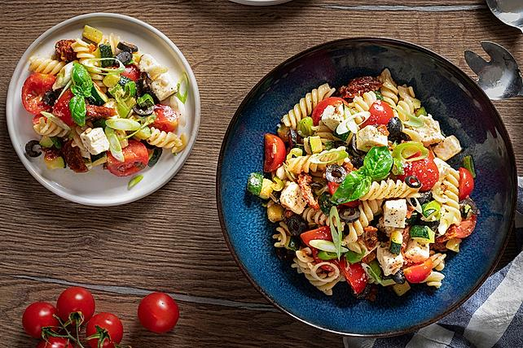

Pasta Salad

Description
vegetarian, without mayonnaise
Ingredients
- 250 g Noodles, eg fusilli
- 250 g cocktail tomatoes
- 2 Spring onion(s), more to taste
- 250 g feta cheese
- 150g Tomato(es), dried in oil
- 100 g Olives, black, sliced
- 1 m.-large zucchini
- 2 tbsp Sunflower seeds or grain mix
- 8 tbsp Balsamic vinegar, lighter
- 8 tbsp olive oil
- salt and pepper
- oregano
- Garlic
- 100ml Water
- 1 teaspoon vegetable broth
- 1 teaspoon, strained Mustard
- sweetener, liquid
Steps
- Cook the noodles in salted water until al dente, drain and leave to cool.
- In the meantime, cut the sun-dried tomatoes into small pieces. Quarter the fresh tomatoes. Wash the spring onions and cut into fine rings, also using part of the green stalks. Dice feta cheese. Wash the zucchini and cut into small cubes.
- Put about 3 tablespoons of oil from the jar of sun-dried tomatoes in a pan and heat. Steam the zucchini cubes over a moderate heat for about 5 minutes until soft.
- Place the pasta in a bowl and add the quartered fresh tomatoes, sun-dried tomatoes, spring onion rings, olive slices, diced feta cheese and sunflower seeds. Pour the zucchini cubes with the oil from the pan over the salad while they are still warm.
- For the dressing, mix the water, vinegar, oil, vegetable stock, mustard, sweetener and spices together and pour over the pasta salad. Mix everything well and let stand for at least 1 - 2 hours.
- Depending on your taste, you can also use a little more vinegar or oil. You can serve the salad right away, but it tastes much better when it's steeped.